LanPulse is a real-time map and security dashboard for your home or lab network. It discovers every device and shows how they connect, with live traffic on each link. It watches attacks land on a world map, catches scanners in a built-in honeypot, finds known vulnerabilities, and tells you at a glance how secure your network is and whether anything inside it is already compromised. One tap blocks an attacker on your UniFi gateway.
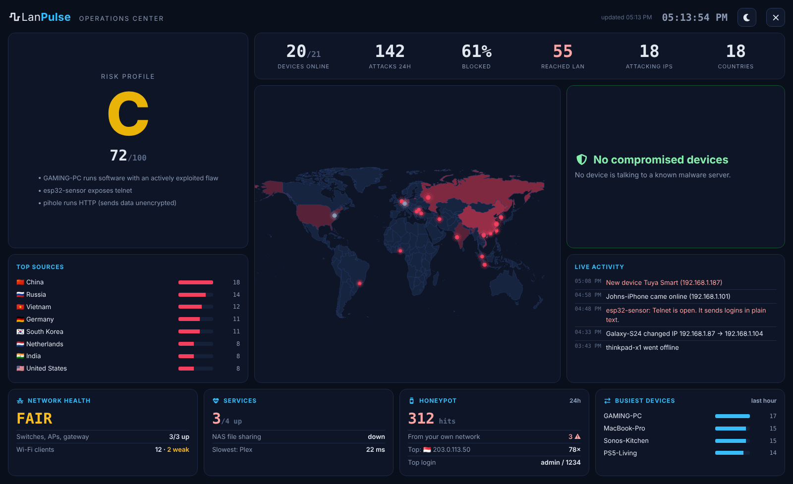
What it does
LanPulse pulls your router's firewall log, scans your devices, and reads your Pi-hole — then turns it all into live views you can actually act on.
The Network tab draws your real topology: Internet, gateway, switches, access points, then every device on its own cable. With a UniFi gateway it reads the connections automatically. On any other router you tell LanPulse where a device plugs in, and add VLANs or subnets as zones.
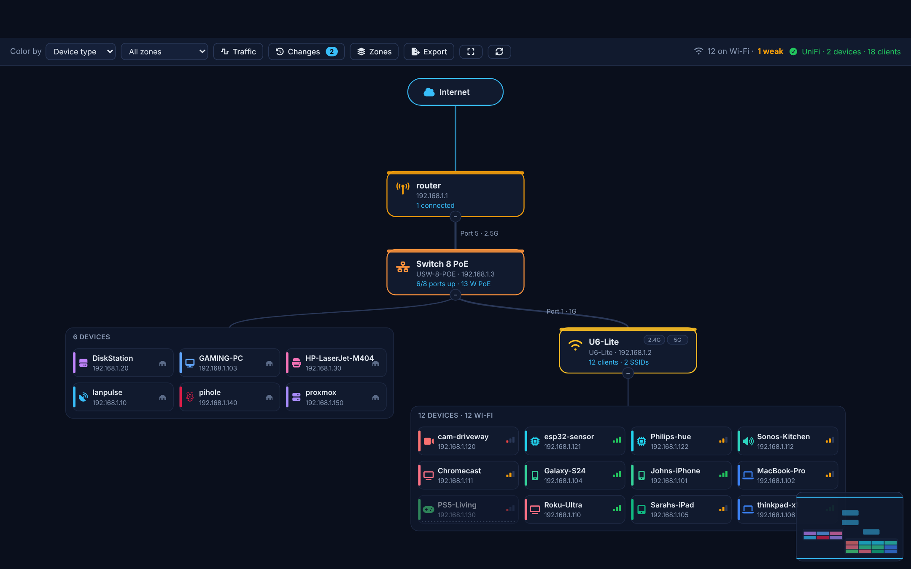
Click an access point or switch for the details UniFi already knows, in one place, with a way to open the full device page.
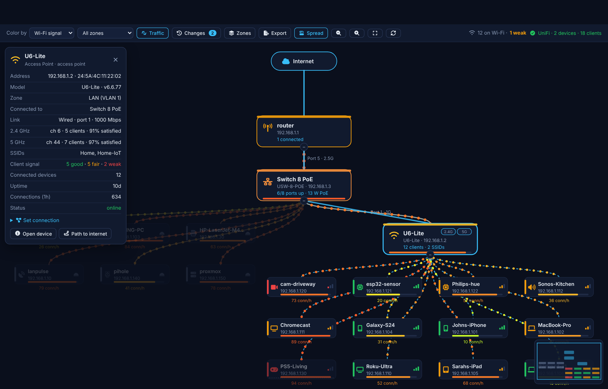
Every blocked probe and every connection that gets through is placed on a live world map, with the attacking country named and your own outbound traffic drawn alongside it.
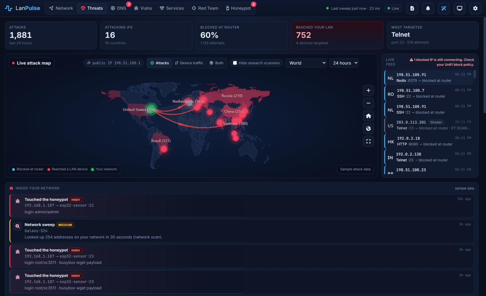
Version matching can't see missing Windows patches, so LanPulse also runs safe active checks and, optionally, OpenVAS, on thorough scans and marks what it proved separately from what it only suspects. Flaws that are being actively exploited or have a working exploit rank first — including old Windows.
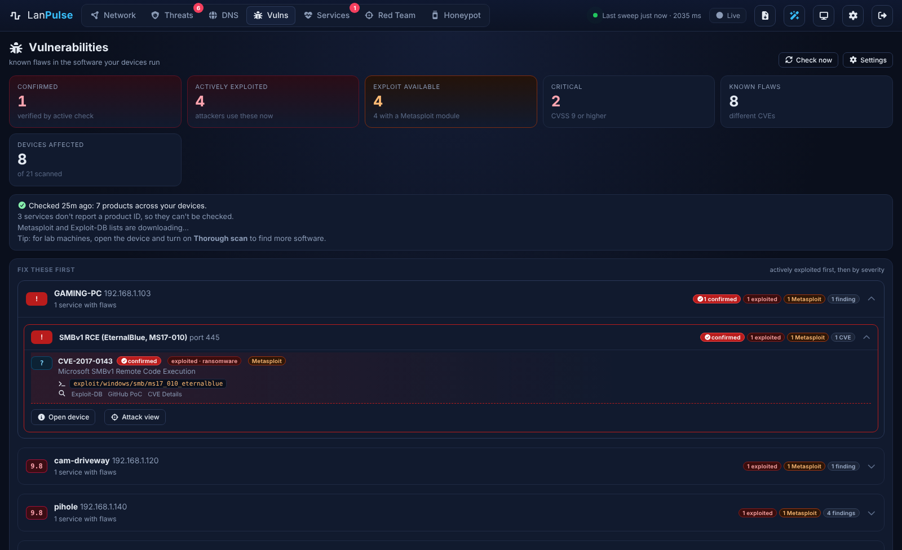
nmap can only guess from banners. LanPulse can now install and drive OpenVAS (Greenbone Community Edition), which runs tens of thousands of real vulnerability tests — so exploitable services on old and lab machines stop slipping through.
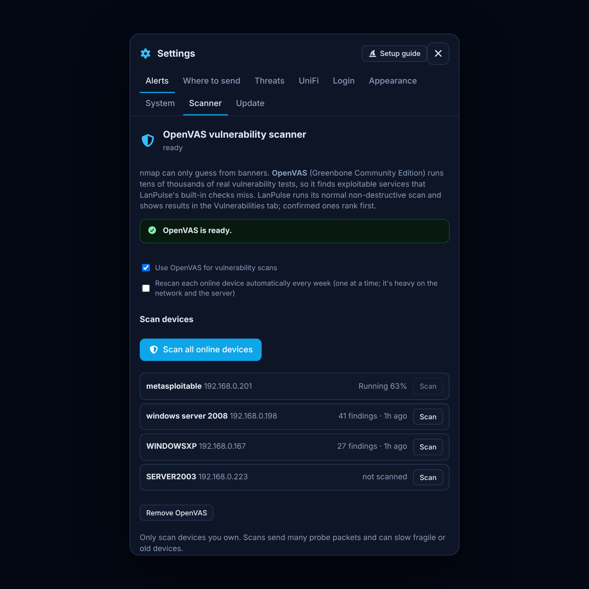
Turn on decoy Telnet, FTP, SMB, RDP and MySQL services (plus optional SSH and HTTP). Nothing legitimate should ever touch them, so every hit is a warning sign — and a hit from inside your LAN means a device is likely compromised.
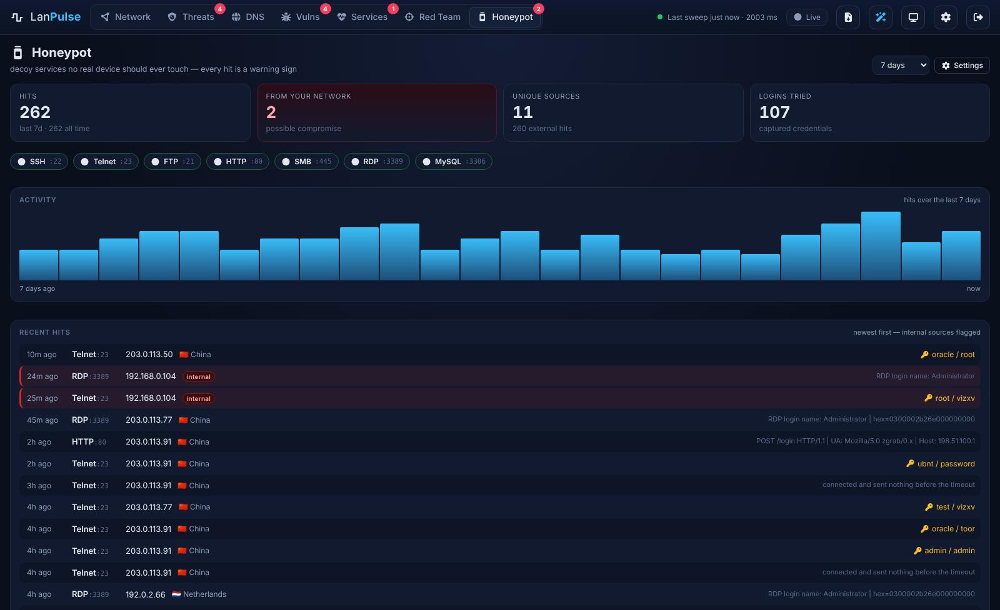
A read-only assistant that answers in plain language using only what LanPulse already knows — and cites the devices, ports and CVEs behind every answer. Bring your own AI.
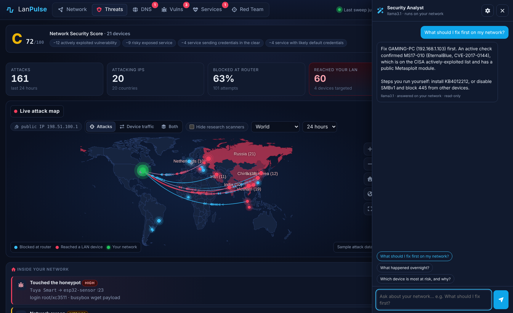
The Red Team tab maps your exposures to the MITRE ATT&CK framework, scores each host's exploitability, and generates the exact Metasploit commands and a resource script for your own testing — it never runs an exploit.
.rc, Nmap XML, ATT&CK Navigator layer, HTML report.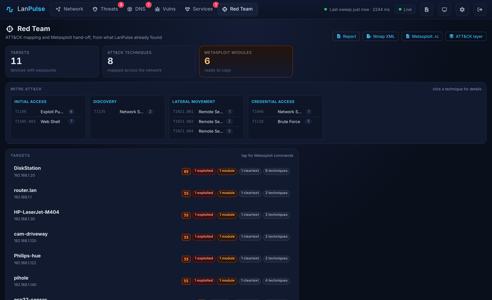
One click opens a full-screen NOC view built for a TV or second monitor: the security grade, live stats, the attack map, a compromised-device banner and a running activity feed — all auto-refreshing.
Beyond monitoring
Most tools only watch the front door. LanPulse also watches what your devices do — and learns what's normal for each one.
Flags any device that connects out to a known botnet command-and-control server (abuse.ch Feodo Tracker) — the strongest sign a device is infected.
Learns each device's normal outbound regions and traffic volume, then alerts when a device talks somewhere new or spikes unexpectedly.
Detects ARP spoofing, rogue DHCP servers, network sweeps and port scans — and catches a replaced or impersonated router.
Reads your Pi-hole query log and flags lookups of known-malware domains, per device.
HTTP, TCP and ping checks for the things you care about, with history and down/up alerts.
Decoy services that log every probe and the credentials tried; a hit from inside your LAN flags a likely-compromised device.
Safe active checks prove flaws that version matching misses, like missing SMB patches on old Windows.
Ask questions in plain language with Ollama, an OpenAI-compatible server or Anthropic. Read-only, grounded in your data.
Install and run Greenbone's vulnerability scanner from Settings; findings merge into the Vulnerabilities tab.
Flags a device probing 5+ machines on admin ports within 10 minutes, including across VLANs.
A first-run wizard walks through the router, alerts, scanning, honeypot and AI analyst.
Every change on a device — ports opened, software updated, vulnerabilities found, threats seen — in one history.
ntfy, Telegram, email, Discord/webhook and IRC — with a daily summary.
Update from the dashboard; the previous version is backed up and restored automatically if anything fails.
Login-protected, DNS-rebinding and CSRF guards, a systemd sandbox, and no exposed shell.
Works with your router
Device discovery, scanning, the honeypot, OpenVAS and the AI analyst work on any network. The attack map and botnet detection read your router's firewall log over syslog, and the setup guide shows the steps for yours.
| Router / firewall | Log format | Notes |
|---|---|---|
| UniFi (UDM, UDM Pro, UCG) | netfilter, CEF (IPS) | Also one-click blocking and the IPS view |
| pfSense / OPNsense | filterlog | Tick Log on the rules you want to see |
| OpenWrt, DD-WRT, Linux (iptables, nftables, UFW) | netfilter | Add LOG rules and forward with syslog |
| MikroTik RouterOS | firewall log | Log rules with a prefix containing drop or accept |
| Fortinet, SonicWall, Sophos, WatchGuard | key=value | Needs srcip, dstip, dstport and action |
| Anything else | JSON | POST events to the ingest API from scripts or IDS |
The Topology view reads real connections from UniFi automatically; on other routers you set where devices connect, and add zones by network range. One-click blocking currently needs a UniFi gateway. Many consumer routers on stock firmware can't send firewall logs, so they get device mapping and scanning but no attack map.
Make it yours
From a clean enterprise look to full 80s hacker. Switch in Settings → Appearance.
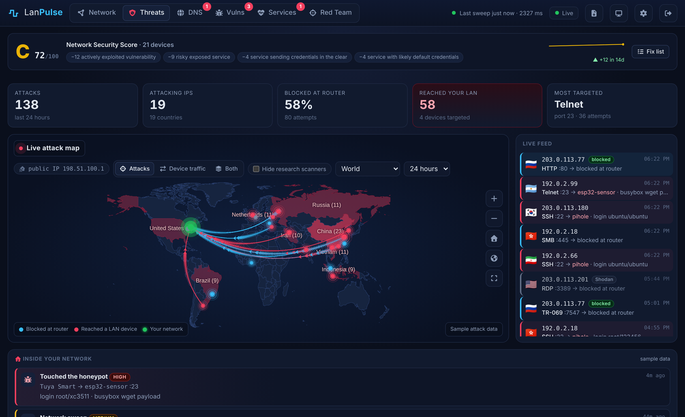
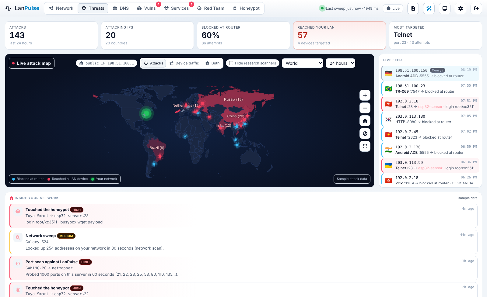
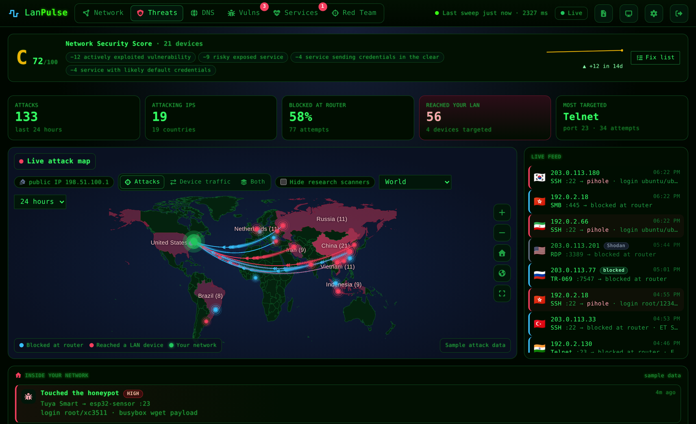
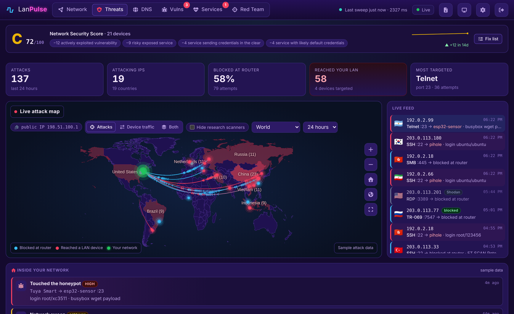
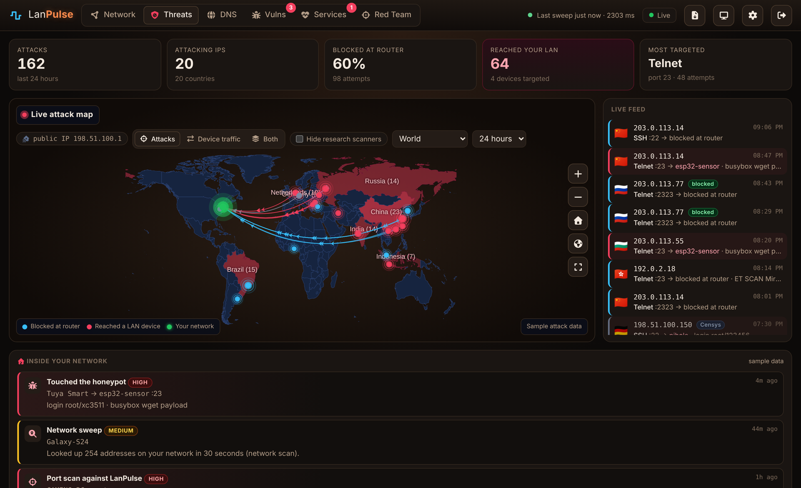
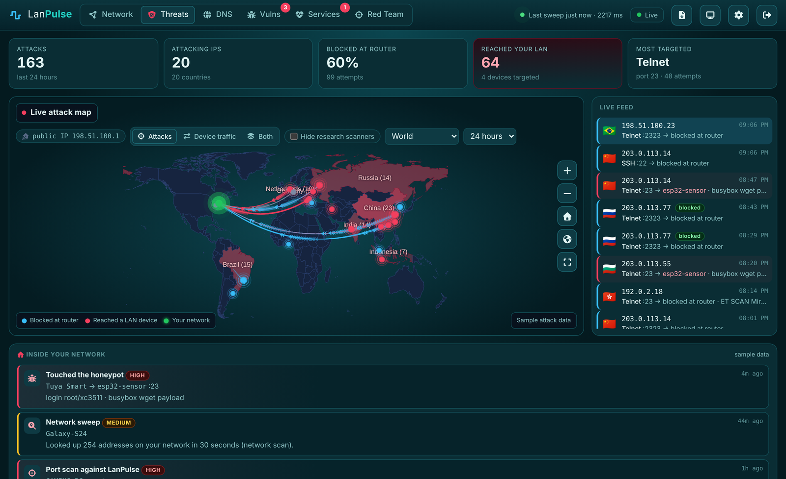
Get started
LanPulse runs on Ubuntu, Debian or a Raspberry Pi (64-bit). You view it from any browser on your network.
# On a spare Linux box or Raspberry Pi: unzip lanpulse.zip -d ~ && cd ~/lanpulse sudo ./install.sh # then open it from any computer on your network: https://<the-box-ip>:8080
The installer sets up everything — a Python virtual environment, the lanpulse systemd service,
a self-signed certificate and the firewall rules. Point your router's firewall log at the box and, optionally,
connect your Pi-hole and UniFi gateway. Full setup notes are in the README.